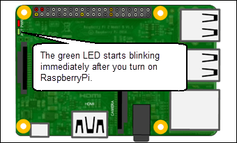

Automatically Run MATLAB Function on Raspberry Pi After Restart
If you deploy a MATLAB® function on Raspberry Pi®, the function does not start running automatically after the Raspberry Pi is switched on. You must manually start the function by establishing a Secure Shell (SSH) connection with Raspberry Pi through Wi-Fi® or Ethernet.
With the Run-on-boot feature, you no longer need to manually start the MATLAB function. The function runs immediately after the Raspberry Pi is switched on.
The MATLAB function blinkLED lights a green LED on Raspberry Pi. Open the function in Simulink® editor and deploy it on Raspberry Pi. After the model is deployed successfully, the green LED starts blinking. Now,
restart Raspberry Pi and wait for a few seconds. The green LED does not start blinking because the
function on the hardware is not running.
Now, add your MATLAB deployed function to Run-on-boot as described in Add the MATLAB Function to Run-on-Boot and restart Raspberry Pi. The green LED starts blinking immediately after the restart.

Create a MATLAB Function
Copy the
blinkLEDfunction and paste it in the MATLAB Editor. The function implements an algorithm to blink the ACT LED on the Raspberry Pi hardware every0.5seconds for100cycles.function blinkLED() % Create a Raspberry Pi object r= raspi(); % Blink the LED for 100 cycles for count = 1:100 % Turn on the LED writeLED(r,"LED0", 1); % Pause for 0.5 seconds pause(0.5); % Turn off the LED writeLED(r,"LED0", 0); % Pause for 0.5 seconds pause(0.5); end end
Save the function as
blinkLED.mto a folder to which you have write access.
Create a Hardware Configuration Object
Create a hardware configuration object by using the
targetHardwarefunction in the MATLAB Command Window.Note
For Raspberry Pi with 32-bit OS use
targetHardware('Raspberry Pi')and for 64-bit OS usetargetHardware('Raspberry Pi (64bit)').board = targetHardware('Raspberry Pi (64bit)') board = targetHardware with properties: Name: 'Raspberry Pi (64bit)' DeviceAddress: '176.93.236.232' Username: 'pi' Password: '*********' BuildDir: '/home/pi' EnableRunOnBoot: 0 BuildAction: 'Build, load, and run' CoderConfig: [1×1 coder.CodeConfig]
Verify the
DeviceAddress,Username, andPasswordproperties listed in the output. If required, change the value of the properties by using dot notation syntax.For example, to change the device address to
173.21.22.327, enter:board.DeviceAddress= '173.21.22.327'
Add the MATLAB Function to Run-on-Boot
You can add or remove a MATLAB function from Run-on-boot by setting the EnableRunOnBoot property using the following MATLAB function:
board.EnableRunOnBoot = true board = targetHardware with properties: Name: 'Raspberry Pi (64bit)' DeviceAddress: '176.93.236.232' Username: 'pi' Password: '*********' BuildDir: '/home/pi' EnableRunOnBoot: 1 BuildAction: 'Build, load, and run' CoderConfig: [1×1 coder.CodeConfig]
Manage Run-on-Boot Programmatically
You can manage the Run-on-boot feature programmatically using:
addToRunOnBootgetRunOnBootremoveRunOnBoot
Limitations
You can add only one function to Run-on-boot. The most recently added function overwrites the existing function in Run-on-boot.
Run-on-boot does not work when the function is running in External mode or Processor-In-The-Loop (PIL).